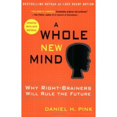

A Whole New Mind by Daniel Pink
A post from Doug Johnson outlines Pink' s thesis in A Whole New Mind and the necessary 'right-brain' senses we need in what Pink calls the Conceptual Age.
Pink acknowledges the outsourcing trend (Asia), as well as two other trends he labels Abundance and Automation. He suggests that readers ask themselves three questions about their jobs:
1. Can someone overseas do it cheaper?
2. Can a computer do it faster?
3. Am I offering something that satisfies the nonmaterial, transcendent desires of an abundant age? (Are you not just making toilet brushes, but toilet brushes that satisfy the user’s aesthetic sensibilities as well?)As a result of these trends, he believes we are shifting from the Information Age to the Conceptual Age. Successful players in this new economy will increasing be required to develop and use the right-brain abilities of high concept (seeing the larger picture, synthesizing information) and high touch (being empathetic, creating meaning). Happy news, perhaps, for those of us who never were all that good at the left-brain stuff in the first place.
More specifically, he suggests we work toward developing in ourselves (and I hope by implication, our students), six right brain “senses,” to complement our left-brain, analytic skills. He suggests we will need realize the value of:
1. Not just function, but also DESIGN
2. Not just argument, but also STORY.
3. Not just focus, but also SYMPHONY.
4. Not just logic, but also EMPATHY.
5. Not just seriousness, but also PLAY.
6. Not just accumulation, but also MEANING.
Doug Johnson revisits Pink's premise and adds a seventh sense, learning. He then goes to illustrate how schools might emphasis the six - now seven senses.
In the (Feb 2006) issue of School Administrator Daniel Pink interviews Tom Friedman on Education in the ‘Flat World’
According to Friedman,
"the greatest economic competition in the world going forward is not going to be between countries and countries. And it’s not going to be between companies and companies. The greatest economic competition going forward is going to be between you and your own imagination. Your ability to act on your imagination is going to be so decisive in driving your future and the standard of living in your country. So the school, the state, the country that empowers, nurtures, enables imagination among its students and citizens, that’s who’s going to be the winner."